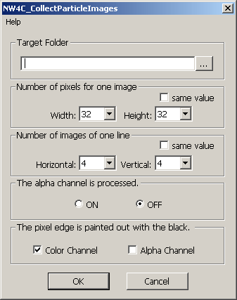

This plug-in collects serially numbered images from a specified Photoshop folder into a single image.
From the File menu, select Automatic Processing > NW4C_CollectParticleImages. A dialog box appears.
Configure the settings, and then click OK to create a file that collects those settings.

For Target Folder, enter the full path to the folder where the particle images are stored.
Click the ... button to open a dialog box and browse for the folder.
In Number of pixels for one image, select the image size.
Both the width and the height can be selected from drop-down lists.
For each dimension, you can select 8, 16, 32, 64, or 128.
If you select the same value option, when you choose a value for the height, the same value is selected for the width.
In Number of images of one line, select how many images you want to place in a single line.
Both horizontal and vertical values can be selected from drop-down lists.
For each dimension, you can select 8, 16, 32, 64, or 16.
If you select the same value option, when you choose a value for Vertical, the same value is also selected for Horizontal.
In The alpha channel is processed, select whether to enable or disable alpha channel processing.
In The pixel edge is painted out with the black, select whether to fill the edge pixels of each frame of the collected images.
Select Color Channel to paint the one pixel at the edge with black.
Select Alpha Channel to paint the one pixel at the edge of the alpha channel with black.
This Alpha Channel option only works when The alpha channel is processed is enabled.
If the selected image has multiple view layers, the layers are automatically merged into one.
If alpha processing is being used and the loaded image includes a background layer, merge all visible layers other than the background layer and use them.
Use Bilinear for the interpolation method when enlarging or reducing an image.
CONFIDENTIAL